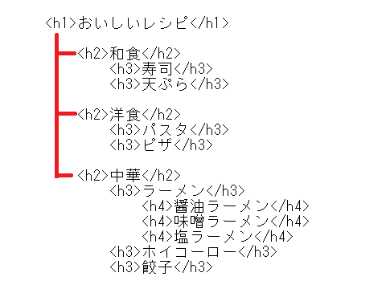
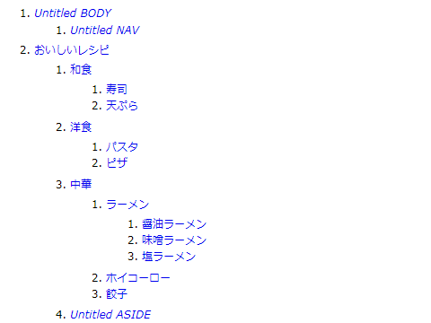

<h1>、<h2>タグは見出しを記述するHTML
見出し部分（heading）はh1やh2タグで囲って記述します。
<h1>ほにゃらら</h1>
<h2>ほにゃらら</h2>
h1からh2、h3と順番に記述していき、h1～h6まで使うことができます。一般的には「h1」はそのページでひとつのみ、「h2」や「h3」は複数回記述されているケースも多いです。
これらを大見出し、中見出し、小見出しで重要度に応じて使い分けをします。
大見出し → h1
中見出し → h2
小見出し → h3
h1、h2と使ってきたのに、h3を飛ばしてh4などとするのは避けるようにしましょう。
h1～h6タグで文章構造をアウトラン化
これらのh1～h6タグを組み合わせて、文章の構造を論理的に示すことができます。
例えば、以下のようなh1、h2、h3、h4タグで構成されたサイトがあったとします。

このように、h1の大見出しとh2の中見出し、あるいはh3やh4の小見出しを組み合わせることで、以下のように文章のアウトライン（概要）を明示することができます。

右側に行くほど見出しのレベルが下がっていきますが、混み入った内容になる場合には見出しのレベルを合わせることをおすすめします。
この見出しのhタグのみを拾っていくことで文章の概要を把握することができ、本の目次のような役割を果たすことになります。
また、文章読み上げのスクリーンリーダーを使用する際、見出し部分のみを読み上げることで目的の箇所が分かりやすくなります。見出しレベル2の次に、見出しレベル4などとなった場合、3はどこに行ったのか混乱してしまうため、順番に使用するようにしましょう。
逆に、h1 → h4と順番に使用した上で、h4の次にh2を使用するのは問題ありません。上記の例の場合、<h4>塩ラーメン</h4>の次に、<h2>イタリアン</h2>となっても問題ありません。
ただ、h4やh5、h6については実際にはほとんど見かけることはありません。ホームページでh6まで使うような長文になる場合、コンテンツを分割してページを分けることをおすすめします。
ちなみに、このアウトラインを明示する<section>タグもありますが、現在のところ、あまりスタンダードではないように感じています。
h1タグとh2タグの重要度の違い
一般的には、中見出しのh2よりも大見出しのh1の方が重要度は高いといえますが、無料ブログサービスなどではh1タグに「サイト名のロゴ」が設定されているケースも多いです。
そのため、実際にはh1タグ内にはめぼしい情報が何もなく、むしろh2タグやh3タグに詳細な情報が記載されていることも多いです。サイトのロゴやタイトルをh1に設定するか否かで作り方に違いがあるので注意しましょう。
■トップページのh1タグは「サイトロゴ」が多い
トップページのh1タグについては、「サイト名のロゴ」がそのまま設定されているケースが多いため、必ずしもh1が最重要な箇所というわけでもありません。
サイト名のロゴ → h1
大見出し → h2
中見出し → h3
小見出し → h4
例えば、仮にヤフーニュースなどで以下のようになっていたとします。
<h1>ヤフーニュース</h1>
<h2>消費税、2017年4月から10％に</h2>
<h2>日経平均株価が２万円を突破</h2>
この場合、サイトタイトルのh1タグの情報には特に重要性がありませんので、より具体的な個別ニュースの内容を示す、h2の方が重要性は高いといえます。
無料ブログサービスなどでもそうですが、このようなサイトのタイトルやロゴにh1が設定されているパターンも多いため、以前は検索エンジン側でもh2やh3部分の内容に重点を置いているふしのあった時期もありました。
例えば以下のようなブログの場合、h3に有用な情報があることになります。
ブログ名 → h1
日付 → h2
記事の見出し → h3
現在でもその名残があるように感じてますが、h1タグ同様、h2やh3あたりまでは比較的、重要性が高いといえます。
個別ページのh1は「記事タイトル」が多い
一方、個別ページにつきましても、やはり上記のようにサイトタイトルにh1がそのまま設定されているケースも多いです。
<h1>ヤフーニュース</h1>
<h2>消費税、2017年4月から10％に</h2>
けれども、サイト名にSEO対策上の重要性を持たせる必要はないため、h1からはずし、個別ニュースの見出しをh1に設定しているケースもあります。
<div>ヤフーニュース</div>
<h1>消費税、2017年4月から10％に</h1>
CMSで作成する場合、デフォルトでこのような「記事タイトル」がh1の仕様になっていることも多いです。当サイトもこのパターンで設定しておりますのが、概ね、この２つのパターンのどちらかでh1やh2を設定しているケースが多いと思います。
同様に、カテゴリページについては、「カテゴリ名」をh1で囲むことをおすすめします。
そのほか、h3やh4、h5などもありますが、そのページで強調したいタイトルの部分をh1かh2のどちらかの見出しタグで囲っておくとよいでしょう。
タイトルタグとh1、h2の関連性について
トップページでの見出しタグのh1の部分は、タイトルタグの<title></title>と同一の内容を記述するのが一般的です。 けれども、必ずしも完全に一致させる必要はなく、例えば、楽天の場合は以下のようになっています。
タイトルタグの箇所
<title> 【楽天市場】Shopping is Entertainment! ： インターネット最大級の通信販売、通販オンラインショッピングコミュニティ </title>
h1タグの箇所
<h1>楽天</h1>
このタイトルタグは検索結果でも表示されますので、長めのわかりやすい文章でもよいと思われますが、h1タグはサイト内のロゴで設定されるケースが多く、短めのケースも多いです。
タイトルタグは、そのページ固有の内容を検索エンジンに具体的に伝える必要があります。一方、h1タグは<section>タグで複数回使用することもできますし、特にそのページ固有の内容でもないサイトロゴでも使用されるため、必ずしもそのページ内容を表しているとは限りません。
けれども、h1は大見出しで使うのが一般的なため、概ねそのページ内容を表していることが多く、タイトルタグと同一となるケースが多いと思います。
いずれにしても、タイトルタグとh1の記述内容には関連性を持たせ、まったく無関係な記述は避けるようにしましょう。
さらに、個別ページのタイトルタグとh1,h2の関係でいえば、以下のようになっている場合が多いです。
<title>個別ページ見出し(h2)：サイトタイトル（h1）</title>
<h1>サイトタイトル</h1>
<h2>個別ページ見出し</h2>
例えば、上の例でいえば、以下のような形になります。
<title>消費税、2017年4月から10％に：ヤフーニュース</title>
<h1>ヤフーニュース</h1>
<h2>消費税、2017年4月から10％に</h2>
もしくは、以下のようなケースもあります。
<title>消費税、2017年4月から10％に：ヤフーニュース</title>
<div>ヤフーニュース</div>
<h1>消費税、2017年4月から10％に</h1>
結局、サイトタイトルをh1で囲って重要性を持たせるかどうかということになりますが、サイト運営者の好み次第になるかもしれません。
ただし、コンテンツの中で単に太字にしたいとか、大きな文字にしたいなどの理由で見出しタグを使うのは避けた方がよいです。h1やh2タグは、<strong>タグと同様、論理的に意味を強調する効果があるため、デザイン上、単に太字にするだけの<b>タグとは性質が異なります。
無料ブログサービスなどでは、投稿日時にh2タグが割り当てられているケースもありますが、特に強調させる目的がない場合、そのような使い方は避けた方がよいでしょう。